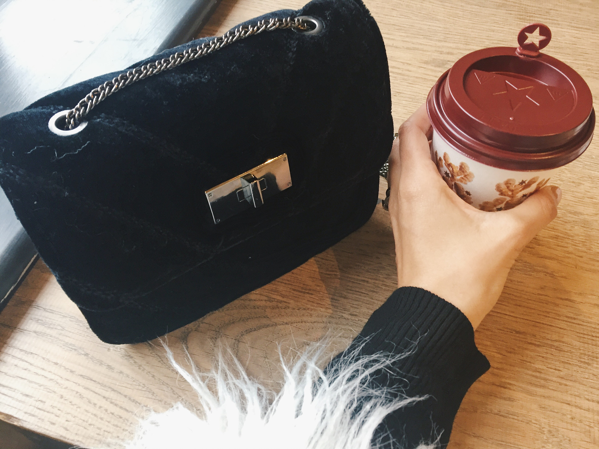

CHRISTMAS AT BICESTER VILLAGE
December 3, 2017
The Bicester Village Designer Outlet is every fashion lovers dream wrapped up with a cute little Christmas bow on top!
I had heard so much about the Bicester Village Designer Outlet, but had never got around to going myself.
As soon as it popped up on my Instagram recently, and I saw the beautiful Christmas decorations , I knew this was the perfect time of year to go for the first time!

We went super early to avoid the traffic (and the crowds), because the designer village is near Oxford. But as soon as it go to around 10am the place was packed full!

But it was absolutely stunning! Everywhere we looked it just screamed Christmas! From the Christmas trees, to the decorations on the shops, and even the staff walking around in cute little red capes and hats looking like Santa’s helpers!
There is everything from Gucci, Dolce & Gabbana, Chloe and Prada. All in all, it has around 160 designer brands! Absolute heaven for all fashion lovers.
We spent a good few hours roaming around, until the crowds just got too busy. In the end we had to queue up and wait around 10 minutes to get into some of the shops because it was just so busy.
So if you are going, I would advise to be there from 9am and aim to see the big brands first before the crowds get there.
And at the end of the trip, I left with my own little present.- a gorgeous pair of Versace sunglasses. They have the most delicate gold details at the side, and I fell in love with them as soon as I saw them!
I cant wait to go back again!
Until next time,